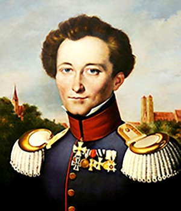

Карл Филипп Готтлиб фон Клаузевиц

1 июля 1780 — 16 ноября 1831
Прусский военачальник, военный теоретик и историк. В 1812—1814 годах служил в русской армии.
Своим сочинением «О войне» произвёл переворот в теории и основах военных наук.
Биография
Карл фон Клаузевиц был из знатного рода дворян. Он начал свою военную карьеру в 1792 году. Через пять лет стал выпускником берлинского военного училища. Затем Клаузевица пригласили на должность адъютанта, так он начал служить при дворе принца Августа Прусского. Молодой военный принимал участие в противостоянии Пруссии и Франции, которое пришлось на 1806-1807 годы. Когда Пруссия потерпела поражение, Карл фон Клаузевиц принял активное участие в разработке реформ, касающихся армии. В это время он также начал преподавать в училище и писать свою первую исследовательскую работу – «Основные принципы войны».
Лучшие книги автора
- О войне.
- Части 1-4
- Части 5-6
- Части 7-8
- О войне. Избранное
- Принципы ведения войны
ТОП 10 цитат автора
- Война ведется до победы и точка
- Сильный темперамент у того, кто не теряет равновесия даже в моменты величайшего возбуждения. Сильным
темпераментом обладает человек, способный не только сильно чувствовать, но и сохраняющий равновесие при
самых сильных испытаниях и способный, несмотря на бурю в груди, подчиняться тончайшим указаниям разума, как
стрелка компаса на корабле, волнуемом бурей
- Величайший враг хорошего плана — мечты о наилучшем плане
- Тактика победителя — убедить врага в том, что он делает всё правильно
- Многие считают, что половинчатые усилия могут принести успех. Короткий прыжок сделать проще, чем длинный, но
никто не станет форсировать широкий поток в два этапа
- Никогда не воюйте с одним противником слишком долго — он приноровится к вашей тактике
- Те, кто не помнит прошлого, обречены на его повторение
- На войне все очень просто. Но самое простое оказывается наиболее сложным
- Стратегические просчеты невозможно компенсировать тактическими успехами
- В теории фактор неожиданности может сыграть вам на руку. Но на практике в ход вступает сила трения, когда скрип
вашей
машины предупреждает противника об опасности